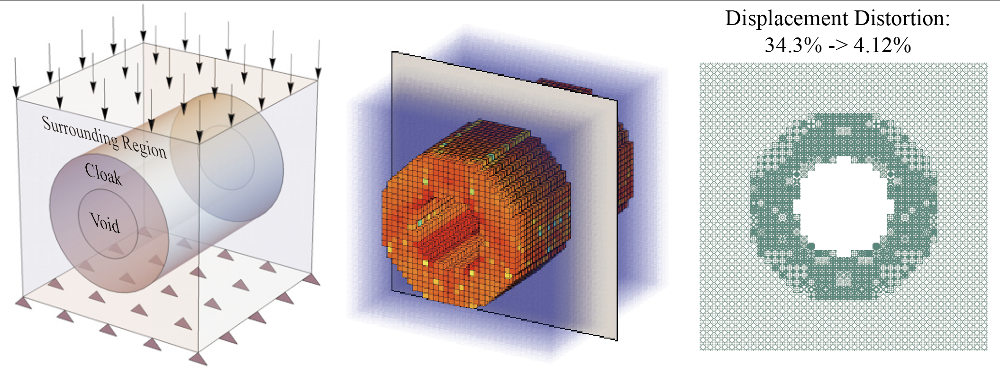

Publications
2024, 2023, 2022, earlier, under review
2024
|  | 19.Guided Diffusion for Fast Inverse Design of Density-based Mechanical Metamaterials. Yanyan Yang+, Lili Wang+, Xiaoya Zhai*, Kai Chen, Wenming Wu, Yunkai Zhao, Ligang Liu, Xiao-Ming Fu*. [ArXiv] |

|
18.WeaveX: Nature-inspired non-planar strategies for extrusion additive manufacturing. Wenpeng Xu+, Hao Xu+, Xiaoya Zhai*, Jingchao Jiang*. under review [ArXiv] |

|
17.Adaptive Isogeometric Topology Optimization of Shell Structures based on PHT-splines. Zepeng Wen, Qiong Pan, Xiaoya Zhai*, Hongmei Kang∗, Falai Chen. under review [ArXiv] |

|
16.Density-based isogeometric topology optimization of shell structures. Qiong Pan, Xiaoya Zhai*, Falai Chen. under review [ArXiv] |
|
|
15.High energy dissipation and self-healing auxetic foam by integrating shear thickening gel. Kang Zhang+, Qiang Gao+, Jingchao Jiang, Meishan Chan, Xiaoya Zhai, Liuchao Jin, Jiangfan Zhang, Jifan Li*, Wei-Hsin Liao*. Composites Science and Technology [Paper] |
2023

|
14.Voxel-based variable width continuous spiral path planning for 3D printing. Wenpeng Xu, Qiuge Li, Hao Xu, Xiaoya Zhai*, Jingchao Jiang*. Journal of Manufacturing Processes, 2023. |

|
13. Topology Optimization of Differentiable Microstructures. Xiaoya Zhai, Weiming Wang, Falai Chen, Jun Wu*. Computer Methods in Applied Mechanics and Engineering, 2023. ISSMO-14th World Congress of Structural and Multidisciplinary Optimization (WCSMO14) , 2021.
|

|
12. An Optimized, Easy-to-use, Open-source GPU Solver for Large-scale Inverse Homogenization Problems. Di Zhang, Xiaoya Zhai*, Ligang Liu, Xiao-Ming Fu. Structural and Multidisciplinary Optimization, 2023. ISSMO-15th World Congress of Structural and Multidisciplinary Optimization (WCSMO15) , 2023.
|

|
11. Low-melting-point alloys integrated extrusion additive manufacturing. Jingchao Jiang+, Xiaoya Zhai+, Kang Zhang+, Liuchao Jin, Qitao Lu, Zhichao Shen, Wei-Hsin Liao*. + These authors contributed equally to this work. Additive manufacturing, 2023. |

|
10. Topology Optimization of Self-supporting Porous Structures Based on Triply Periodic Minimal Surfaces. Nan Zheng, Xiaoya Zhai*, Falai Chen. Computer-Aided Design, 2023. [Paper] |

|
9. Isogeometric topology optimization of auxetic materials based on moving morphable components method. Xiaoya Zhai, Yundong Gai*, Liuchao Jin, Wei-Hsin Liao*, Falai Chen, Ping Hu. Mechanics of Advanced Materials and Structures, 2023.
|

|
8. Design for Reversed Additive Manufacturing Low-Melting-Point Alloys. Jingchao Jiang, Xiaoya Zhai, Liuchao Jin, Kang Zhang, Jun Chen, Qitao Lu, Wei-Hsin Liao*. Journal of Engineering Design, 2023. [Paper] |
2022

|
7. A survey of additive manufacturing reviews. Xiaoya Zhai, Liuchao Jin, Jingchao Jiang*. Materials Science in Additive Manufacturing, 2022.
[paper] |

|
6. Large-Scale Worst-Case Topology Optimization. Di Zhang, Xiaoya Zhai*, Xiao-Ming Fu, Heming Wang, Ligang Liu. Computer Graphics Forum (PG), 2022.
|

|
5. Alternating Optimization Method for Isogeometric Topology Optimization with Stress Constraints. Xiaoya Zhai* Journal of Computational Mathematics, 2022.
[paper] |
Earlier

|
4. Alternating Optimization of Design and Stress for Stress-Constrained Topology Optimization. Xiaoya Zhai, Falai Chen, Jun Wu*. Structural and Multidisciplinary Optimization , 2021. [paper] |

|
3. Dynamic Wind Turbine Wake Reconstruction: A Koopman-linear Flow Estimator. Zhenyu Chen, Zhongwei Lin*, Xiaoya Zhai. Energy , 2021. [paper] |

|
2. Path Planning of A Type of Porous Structures for Additive Manufacturing. Xiaoya Zhai, Falai Chen*. Computer-Aided Design, 2019. [paper] |

|
1. 3D Printing Path Planning of Fractal Models. Xiaoya Zhai, Falai Chen*. Journal of Computer-Aided Design and Computer Graphics , 2018. [paper] |
Presentations
| 2024 | Optimizing stimuli-based 4D printed structures: a paradigm shift in programmable material response | SPIE Smart Structures + NDE 2024 |
| 2024 | Spider web-inspired additive manufacturing: unleashing the potential of lightweight support structures | the 21st International Conference on Manufacturing Research |
| 2023 | A Novel Strategy to Fabricate Low Melting Point Alloy and Its Composite Parts Using Extrusion Additive Manufacturing | The 50th International Conference on Computers and Industrial Engineering |
| 2023 | An Optimized, Easy-to-use, Open-source GPU Solver for Large-scale Inverse Homogenization Problems | 15th World Congress of Structural and Multidisciplinary Optimization |
| 2023 | Isogeometric topology optimization of auxetic materials based on moving morphable components method | International Conference on Advanced Topics in Mechanics of Materials, Structures and Constructions 2023 |
| 2022 | Large-Scale Worst-Case Topology Optimization | Pacific Graphics 2022 |
| 2021 | Topology optimization of differentiable microstructures | 14th World Congress of Structural and Multidisciplinary Optimization |
| 2020 | Alternating Optimization of Design and Stress for Stress-Constrained Topology Optimization. | Solid and Physical Modeling (SPM) 2020 |
| 2018 | 3D Printing Path Planning of Fractal Models | National Conference on Geometric Design and Computation 2018 |